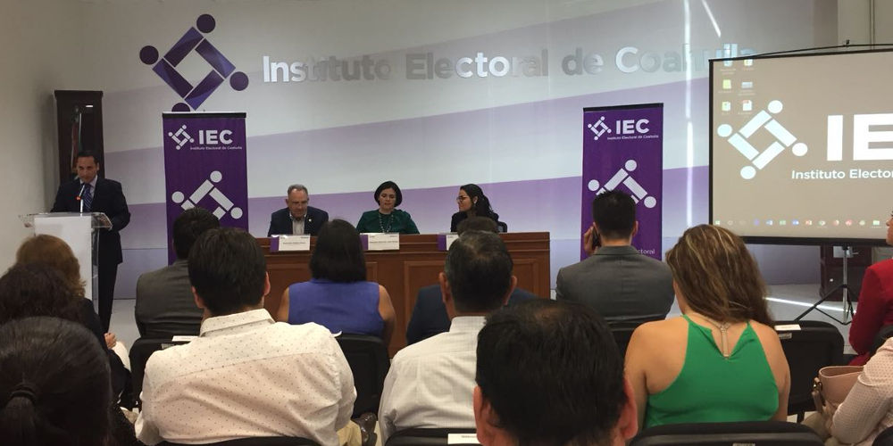
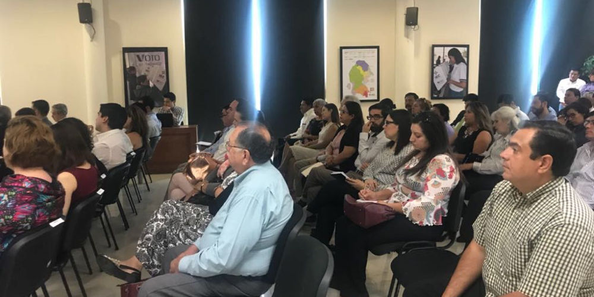

En el Instituto Electoral de Coahuila se presentó la plataforma Candidatura Transparente que sirve para conocer y comparar las propuestas de las y los candidatos que aspiran a un cargo de elección popular
El día de hoy, asistió la Lic. María de Lourdes de Koster, en representación del Consejo de Participación Ciudadana, la Mtra. Marcela Castañeda Agüero, Secretaria Técnica y personal que conforman la Secretaría Ejecutiva del Sistema Anticorrupción del Estado de Coahuila de Zaragoza, a la presentación del programa de "Candidatura Transparente", a cargo del Instituto Electoral de Coahuila (IEC).
La Consejera Presidenta del IEC, Gabriela María de León Farías, refiere que este programa consiste en una plataforma www.candidatotransparente.org.mx, mediante la cual la ciudadanía puede conocer y comparar las propuestas de las y los candidatos que aspiran a un cargo de elección popular.

Con este ejercicio de transparencia se pretende contribuir a que la ciudadanía ejerza un voto informado y razonado en las próximas elecciones del 1 de julio, y que en un solo portal de internet, puedan tener acceso a la información básica de las y los candidatos, a sus propuestas, a sus currículos, a las cartas de motivación y a sus declaraciones 3 de 3. Así mismo, este portal tiene un vínculo directo a "Los Oigo MX", en el cual la ciudadanía puede entablar un diálogo directo con las y los candidatos, sin necesidad de una solicitud de acceso a la información.
Este programa es voluntario, el contenido de la información es responsabilidad de las y los candidatos, el IEC solo provee la asistencia técnica.
De manera posterior, la Dra. Georgina Flores Ivich, Investigadora de FLACSO México, impartió la plática "La Transparencia y la Información como Ejes Estratégicos de Campaña, ¿Por qué participar en la iniciativa Candidatura transparente?".

09 abril 2018